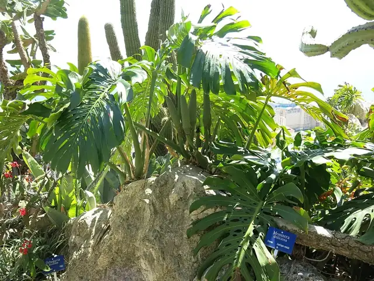
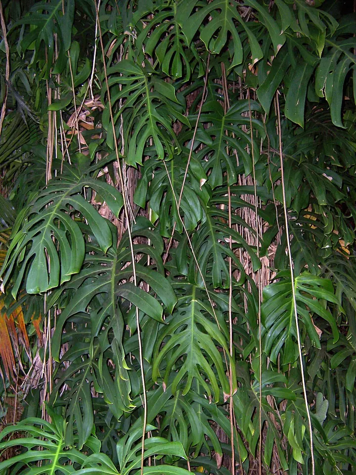
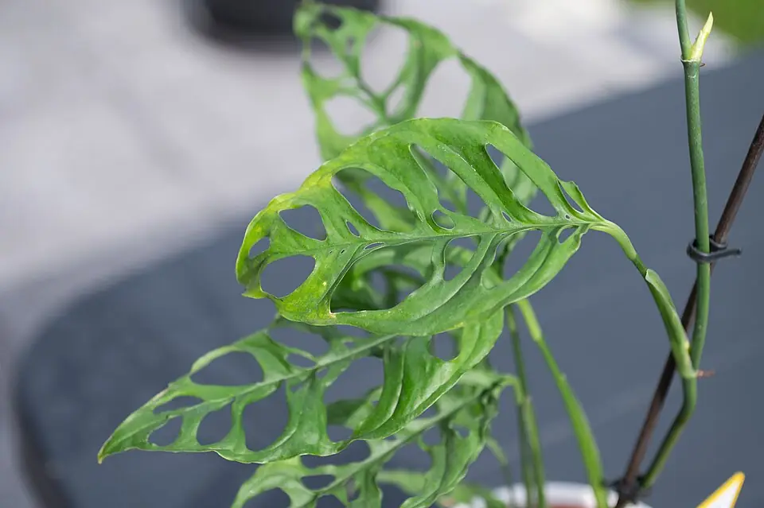
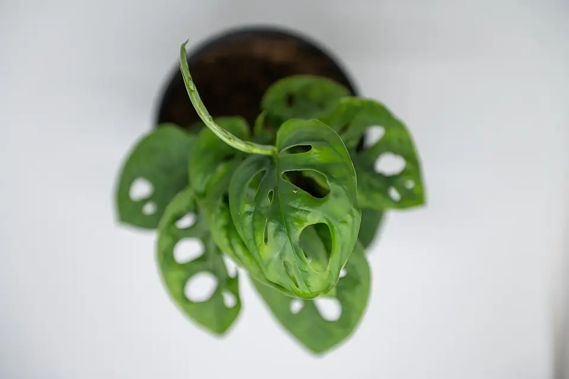

Monstera deliciosa
Grandes feuilles vertes, d’abord entières, puis découpées et trouées.
Genre Monstera · famille Araceae
Noms savants et populaires, portraits, anatomie, culture et un quiz. Un atelier pour reconnaître une deliciosa, une adansonii, une obliqua — et ce qui les distingue vraiment.


Grandes feuilles vertes, d’abord entières, puis découpées et trouées.

Feuilles très percées, presque ajourées, plus délicates.

Feuilles plus petites, trouées au milieu, sans grandes fentes.